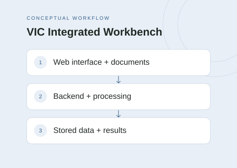

The idea
VIC Integrated Workbench is a collaborative Court Services project that brings application workflows and document processing into one platform. The system connects a React interface to a Spring Boot API, a PostgreSQL database, and services for document extraction and PDF redaction.
My contribution
I contributed mainly to backend development and deployment as part of the project team.
Project scope
- Connect a React web interface to a Spring Boot backend API.
- Store application data in PostgreSQL and documents in blob storage.
- Support structured document extraction and PDF redaction through Python services.
- Run the application and its supporting services together with Docker Compose.
Technical approach
The Spring Boot backend connects the web interface, persistent data, document storage, and processing workers. Python services handle extraction and redaction, while Docker Compose coordinates the application services and Caddy provides the deployment entry point.
Scope & limitations
This overview describes the team's project scope and my areas of contribution. It does not report measured extraction accuracy, security certification, or Court Services adoption.